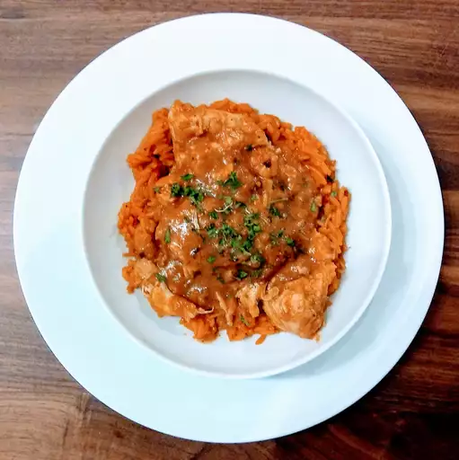

Chicken Tikka Masala

Description
The Chicken Tikka Masala is an indian curry dish which can be seen as both a side dish or a main dish. It has been known to be spicey and packs quite a punch of flavours. The tikka masala is one of the easy chicken dish and uses simple ingredients so almost anyone can make it.
This dish is a flavorful version of everyone's favorite mild-medium curry! It's best served with naan bread and mango chutney. Garnish with additional cilantro leaves or coriander for a nice touch.
ingredients
- 1 (14.5 ounce) can chopped tomatoes
- 4 tablespoons plain yogurt
- 2 cloves garlic, roughly chopped
- 1 (1 inch) piece ginger
- 2 tablespoons vegetable oil
- 1 onion, chopped
- 2 tablespoons masala curry paste
- 4 skinless, boneless chicken breasts, cut into 1-inch pieces
- salt and freshly ground black pepper to taste
- ¼ cup water
- 1 tablespoon all-purpose flour
- 3 tablespoons chopped fresh cilantro or coriander
Steps:
- Combine tomatoes, yogurt, garlic, and ginger in a blender and process until smooth.
- Heat oil in a large frying pan over medium heat. Add onion and fry until soft, 3 to 4 minutes, stirring constantly. Stir in curry paste and fry until fragrant, 1 minute more, stirring once or twice. Add the tomato mixture and chicken to the pan and mix together. Season with salt and pepper. Remove pan from heat.
- Mix water and flour together in a bowl. Stir into the chicken mixture in the frying pan. Return pan to the heat and bring to a boil, stirring constantly, about 5 minutes. Reduce heat to low, cover, and cook until thickened, about 15 minutes more. Sprinkle with cilantro and serve immediately.